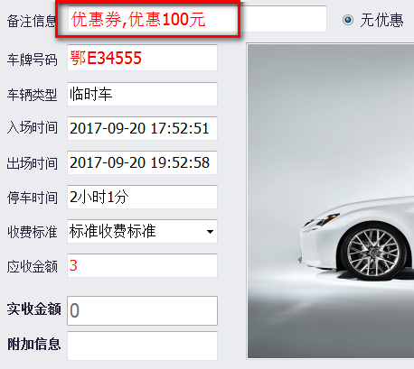
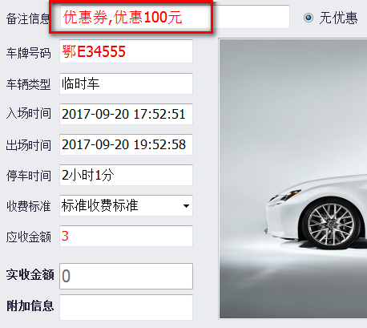

停车优惠券功能
以下参数设置只对当前电脑有效,多台电脑需多次如法炮制.
1.功能介绍
大型商业场所下,物业中心可为管辖的商户发行停车优惠券,商户再自主将优惠券下发给来店消费的客人或其它使用者.执优惠券的车主出场时能减免一定的停车费用.
优惠券分为定额优惠券\时长优惠券\自宝义优惠券.
可在停车场联网和脱机下使用.
2.操作说明
2.1 开启停车优惠券功能
在软件根目录里找到Config文件夹,在此文件夹下有个Coupon.xml1.
首先将该文件重命名为Coupon.xml,即去掉原文件名后面的"1",然后用记事本打开该文件,如下图.
ParkingID:区分停车场的唯一ID号,不能相同,此ID与商户对应.ID自定义,尽可能编的复杂点.
ID由字母和数字组成,不能包含其它字符.
IP:发行优惠券的服务器IP地址.
能访问外网的停车场,可使用我司提供的云服务器发行优惠券.
不能访问外网的停车场,可自架web服务器供内网访问,我司可协助部署发行优惠券的程序.
更改后,保存并重启车牌识别管理软件.
以下以我司云服务的优惠券程序说明功能的使用
2.2 增加物业信息
通过浏览器访问发行优惠券的web程序.
登入成功后,如下图增加物业信息.
输入物业名称,如'summer'.
修改或删除物业信息:在物业名称上右键,在弹出的菜单中选择.
2.3 增加商户信息
在物业名称上右键,如下图,选择"添加商户".
商户:名称自定义.
车场:即前文提到的Coupon.xml里的ParkingID的信息.
券过期时间:商户发行券给消费者,在之后多长时间内必须使用,否则过期失效.
必须校验车牌:规定该商家发行的优惠券是联网用还是脱机用.
修改或删除商户信息:在商户名称上右键,在弹出的菜单中选择.
2.4 增加物业操作员
物业操作员用于定义定额券面额和发行优惠券给商户,还有查询所有记录.
如下图操作.
操作员增加成功后,账号和密码是登入程序的凭证.如下图,
默认物业操作员权限不够,可更改权限.
物业操作员信息不可修改,只能删除.
2.5 增加商户操作员
商户操作员主要用于发行优惠券给车主,其次可以查询商户发放的券记录.
如下图操作.
操作员增加成功后,账号和密码是登入程序的凭证.
也可修改商户操作员的权限.
商户操作员信息不可修改,只能删除.
2.6 定义定额券信息
只有物业操作员可以预先设定定额券的信息.
定额券规定了可以减免的固定金额.
2.7 商户充值
只有物业操作员可以为商户充值.
商户充值即物业为商户发行优惠券的行为.
操作方法类似新增定额券信息.
优惠券分为三种,
时长优惠券:该券使用时会在原停车时长上减去优惠时长;
自定义金额券:不同于定额券,可以自由输入减免金额的券,使用时会在原停车费上减去优惠的金额.
定额券:优惠金额已经预先设定好,不能随意更改,使用时同自定义金额券.
2.8 券发放记录
查询商户给车主发放的优惠券记录.
以物业管理员登入,点击物业名称,再点击"券发放记录",可查看该物业管理的所有商户发行的优惠券信息;点击商户名称,再点击"券发放记录",只能查看该商户发行的优惠券信息.
2.8 商户充值记录
查询物业给商户发放的优惠券记录.
点击物业名称,再点击"商户充值记录",可查看该物业为所有商户发行的优惠券信息.
点击商户名称,再点击"商户充值记录",只能查看物业为该商户发行的优惠券信息.
2.9 商户发券操作
商户访问为车主发券的网站,注意该网站与物业为商户发券网站不同.
登入后,界面如下:
发行联网优惠券的,需要绑定车牌号,如下图:
 发行脱机优惠券的,需要将系统生成的二维码发送给车主,如下图:
注意事项:
1.发行联网优惠券时,停车场软件必须进入实时监控,否则发行会失败;
2.发行联网优惠券时,岗亭电脑与发行优惠券的服务器能够通信,即网络正常;
3.发行脱机优惠券无上述两条要求;
4.脱机优惠券已经与车场绑定,不能在其它车场使用.
5.发行后的优惠券均为一次性的,如优惠的金额大于实际停车费时,多出的优惠金额不能下次使用.该优惠券一经使用,当即失效.
发行脱机优惠券的,需要将系统生成的二维码发送给车主,如下图:
注意事项:
1.发行联网优惠券时,停车场软件必须进入实时监控,否则发行会失败;
2.发行联网优惠券时,岗亭电脑与发行优惠券的服务器能够通信,即网络正常;
3.发行脱机优惠券无上述两条要求;
4.脱机优惠券已经与车场绑定,不能在其它车场使用.
5.发行后的优惠券均为一次性的,如优惠的金额大于实际停车费时,多出的优惠金额不能下次使用.该优惠券一经使用,当即失效.
2.10 车主使用方法
联网券绑定了车牌号,当识别到车牌时,软件自动按照联网券类型扣除一定的费用或时长.
例子:
商户为'鄂E34555'这辆车发行一张定额券.
 商户能查询到发行的记录.
该车出场时,停车软件自动使用为该车绑定的优惠券,车主不用感知.

脱机券需要车主将二维码信息提供给收费员,收费员用扫码抢扫描后,再扣除一定的费用或时长.
例子:
商户给'张三'这个人发行一张定额券.
商户能查询到发行的记录.
'张三'驾车出场时,将二维码给收费员扫描,如果是该车场的优惠券,停车软件自动使用为该车绑定的优惠券.
商户能查询到发行的记录.
该车出场时,停车软件自动使用为该车绑定的优惠券,车主不用感知.

脱机券需要车主将二维码信息提供给收费员,收费员用扫码抢扫描后,再扣除一定的费用或时长.
例子:
商户给'张三'这个人发行一张定额券.
商户能查询到发行的记录.
'张三'驾车出场时,将二维码给收费员扫描,如果是该车场的优惠券,停车软件自动使用为该车绑定的优惠券.
2.11 优惠券消费查询
打开停车管理软件,报表管理-->收费明细记录表.